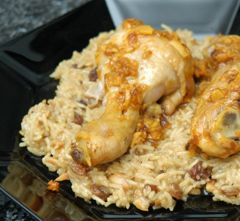

| Zutaten für 4 Personen: |
|
| Poulet | |
| 4-8 | Pouletschenkel, je nach Grösse |
| 4 | Knoblauchzehen |
| 1 | grosse Zwiebel |
| 2 cm | frischer Ingwer |
| 1/2 Tl | Chilipulver |
| 1/2 Tl | Paprika |
| 1/2 Tl | Currypulver |
| 1 Briefchen | Safran |
| 1/2 dl | Öl |
| 1 El | Bratbutter |
| Reis | |
| 1 | Zwiebel |
| 2 cm | frischer Ingwer |
| 1 El | Öl |
| 4 dl | Hühnerbouillon |
| 200 g | Basmatireis |
| 75 g | Mandelstifte |
| 75 g | Rosinen |
| 1 Tl | Currypulver |
| 1/2 Tl | Kardamom |
| 3-4 El | Rosenwasser (in Apotheken erhältlich) |
| Salz, Pfeffer | |
Vorbereitung: 20 Minuten
Marinieren: 2 Stunden
Zubereiten: 40 Minuten
Die Pouletschenkel häuten. Eventuell, je nach Grösse vom Metzger halbieren lassen.
Knoblauch, Zwiebel sowie Ingwer schälen und sehr fein hacken. Mit Chili, Curry, Safran, Paprika und Öl verrühren. Die Pouletschenkel rundum mit dieser Marinade bestreichen. Mit Klarsichtfolie bedeckt im Kühlschrank 2 Stunden ziehen lassen.
Die Pouletschenkel in eine feuerfeste Form legen. Die Bratbutter erhitzen und über das Fleisch träufeln. Die Pouletteile im auf 220°C vorgeheizten Ofen auf der zweituntersten Rille 15 Minuten anbraten. Dann die Hitze auf 160°C reduzieren und je nach Grösse während 20-30 Minuten fertig braten.
Für den Reis Bouillon zubereiten. Dann Zwiebel sowie Ingwer schälen und fein hacken. Im Öl hellgelb dünsten.
Die Bouillon dazugiessen. Den Reis einstreuen, einmal aufkochen und auf kleinem Feuer zugedeckt gar ziehen lassen.
Inzwischen die Mandeln in einer trockenen Pfanne ohne Fettzugabe hellbraun rösten. Rosinen, Curry und Kardamom beifügen und mitrösten bis es gut riecht. Diese Mischung zusammen mit dem Rosenwasser unter den Reis ziehen. Mit Salz und Pfeffer abschmecken.
Zum servieren den Reis auf einer vorgewärmten Platte bergartig anrichten und die Pouletstücke hineinstecken.
Pro Portion 39 g Eiweiss, 38 g Fett, 57 g Kohlenhydrate 746 Kalorien oder 3120 Joule
d'Chuchi Heft 10, Oktober 1998 Seite 6
Schmeckt ganz ausgezeichnet und ist eigentlich recht einfach in der Zubereitung, abgesehen von der Zeit die das Marinieren benötigt. RE 7.12.2009
@LINKBACK_TAG@ @WAKELOCK@